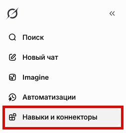
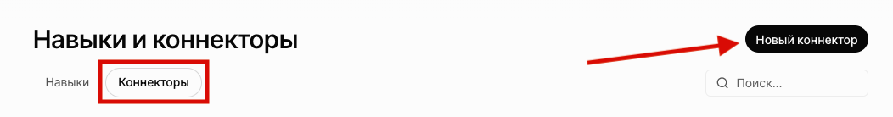
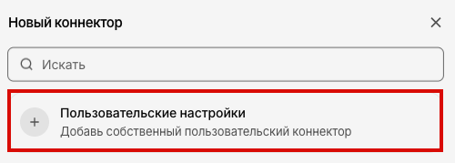
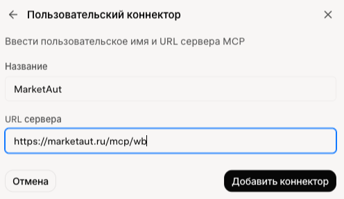
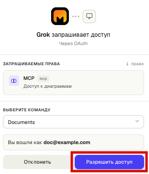
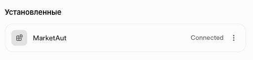
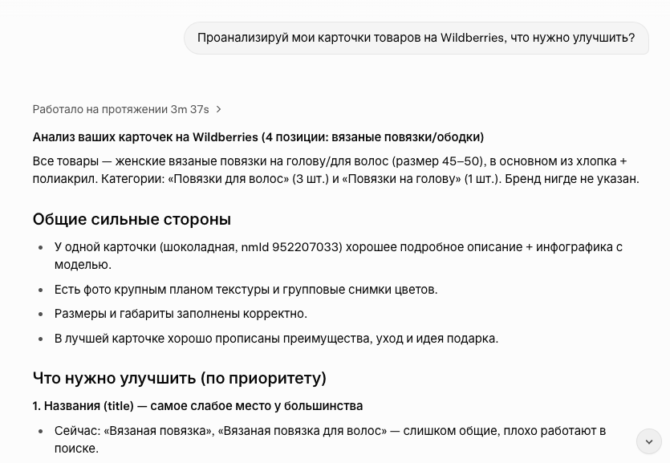

Общая информация
В этом разделе описан процесс подключения Grok к платформе MarketAut по протоколу MCP.
После подключения Grok сможет использовать инструменты и ресурсы, доступные в вашей диаграмме MarketAut, напрямую из диалога.
Перед началом подключения убедитесь, что:
- аккаунт Wildberries успешно создан и настроен — Настройка аккаунта;
- диаграмма создана, настроена и запущена — Создание и запуск диаграммы ;
- получен MCP-адрес на домашней странице MarketAut — Где найти MCP-адрес .
Важно
Добавление собственного MCP-коннектора доступно в веб-версии Grok и в приложении Grok для компьютера. В этой инструкции подключение показано на примере веб-версии Grok.
Видеоинструкция
Смотреть видео по подключению MarketAut к Grok →
Подключение
-
В боковом меню Grok выберите раздел «Навыки и коннекторы».

-
Перейдите во вкладку «Коннекторы» и нажмите «Новый коннектор».

3. В открывшемся окне выберите «Пользовательские настройки».

4. Заполните поля:
- Название: укажите любое удобное название коннектора, например
MarketAut; - URL сервера: вставьте персональный MCP-адрес, скопированный из блока подключения агента на домашней странице MarketAut.
Например: https://marketaut.ru/mcp/wb
После заполнения полей нажмите «Добавить коннектор».

5. Откроется окно предоставления доступа. При необходимости выберите нужную команду и нажмите «Разрешить доступ».

После успешного подключения MarketAut появится в разделе «Установленные» со статусом Connected.

Если отображается статус Connected, подключение успешно завершено.
Использование Grok
Откройте новый диалог Grok и отправьте запрос, для выполнения которого необходимы данные вашего магазина Wildberries.
Например:
Проанализируй мои карточки товаров на Wildberries, что нужно улучшить?

Если подключение настроено корректно, Grok сможет обратиться к инструментам MarketAut и получить данные из вашего магазина Wildberries.